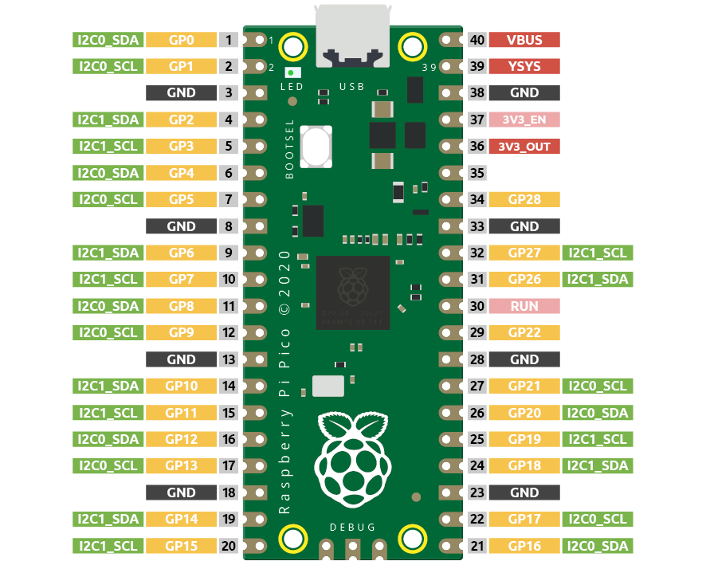
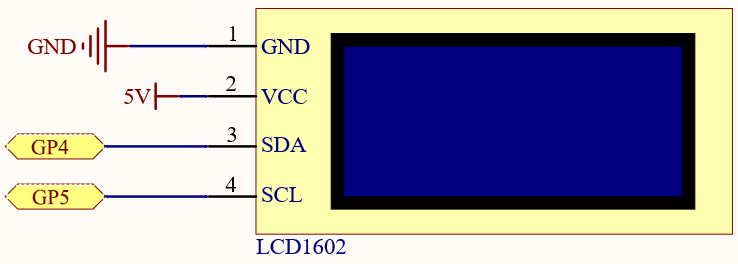
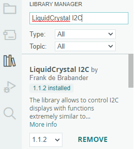

Note
Hello, welcome to the SunFounder Raspberry Pi & Arduino & ESP32 Enthusiasts Community on Facebook! Dive deeper into Raspberry Pi, Arduino, and ESP32 with fellow enthusiasts.
Why Join?
Expert Support: Solve post-sale issues and technical challenges with help from our community and team.
Learn & Share: Exchange tips and tutorials to enhance your skills.
Exclusive Previews: Get early access to new product announcements and sneak peeks.
Special Discounts: Enjoy exclusive discounts on our newest products.
Festive Promotions and Giveaways: Take part in giveaways and holiday promotions.
👉 Ready to explore and create with us? Click [here] and join today!
3.4 - Liquid Crystal Display¶
LCD1602 is a character type liquid crystal display, which can display 32 (16*2) characters at the same time.
As we all know, though LCD and some other displays greatly enrich the man-machine interaction, they share a common weakness. When they are connected to a controller, multiple IOs will be occupied of the controller which has no so many outer ports. Also it restricts other functions of the controller. Therefore, LCD1602 with an I2C bus is developed to solve the problem.

Here we will use the I2C0 interface to control the LCD1602 and display text.
Schematic

Wiring
{kind=link}
Code
Note
You can open the file
3.4_liquid_crystal_display.inounder the path ofeuler-kit/arduino/3.4_liquid_crystal_display.Or copy this code into Arduino IDE.
Then select the Raspberry Pi Pico board and the correct port before clicking the Upload button.
The
LiquidCrystal I2Clibrary is used here, you can install it from the Library Manager.
After the code is uploaded successfully, you will see “SunFounder”, “Hello World” on the I2C LCD1602.
Note
If the code and wiring are fine, but the LCD still does not display content, you can turn the potentiometer on the back to increase the contrast.
How it works?
By calling the library LiquidCrystal_I2C.h, you can easily drive the LCD.
#include "LiquidCrystal_I2C.h"
Library Functions:
LiquidCrystal_I2C(uint8_t lcd_Addr,uint8_t lcd_cols,uint8_t lcd_rows)
Creates a new instance of the LiquidCrystal_I2C class that represents a particular LCD attached to your Arduino board.
lcd_AddR: The address of the LCD defaults to 0x27. lcd_cols: The LCD1602 has 16 columns. lcd_rows: The LCD1602 has 2 rows.
void init()
Initialize the lcd.
void backlight()
Turn the (optional) backlight on.
void nobacklight()
Turn the (optional) backlight off.
void display()
Turn the LCD display on.
void nodisplay()
Turn the LCD display off quickly.
void clear()
Clear display, set cursor position to zero.
void setCursor(uint8_t col,uint8_t row)
Set the cursor position to col,row.
void print(data,BASE)
Prints text to the LCD.
data: The data to print (char, byte, int, long, or string).
BASE (optional): The base in which to print numbers: BIN for binary (base 2), DEC for decimal (base 10), OCT for octal (base 8), HEX for hexadecimal (base 16).
Learn More
Upload the codes to the Pico, the content that you input in the serial monitor will be printed on the LCD.
Note
You can open the file
3.4_liquid_crystal_display_2.inounder the path ofeuler-kit/arduino/3.4_liquid_crystal_display_2.Or copy this code into Arduino IDE.
Then select the Raspberry Pi Pico board and the correct port before clicking the Upload button.
In addition to reading data from the electronic components, the Pico
can read the data input in the serial port monitor, and you can
use Serial.read() as the controller of the circuit experiment.
Run the serial communication in setup() and set the data rate to 9600.
Serial.begin(9600);
The state of serial port monitor is judged in loop(), and the information processing will be carried out only when the data are received.
if (Serial.available() > 0){}
Clear the screen.
lcd.clear();
Reads the input value in the serial port monitor and stores it to the variable incomingByte.
char incomingByte = Serial.read();
Display each character to the LCD and skip the line-feed character.
while (Serial.available() > 0) {
char incomingByte=Serial.read();
if(incomingByte==10){break;}// skip the line-feed character
lcd.print(incomingByte);// display each character to the LCD
}